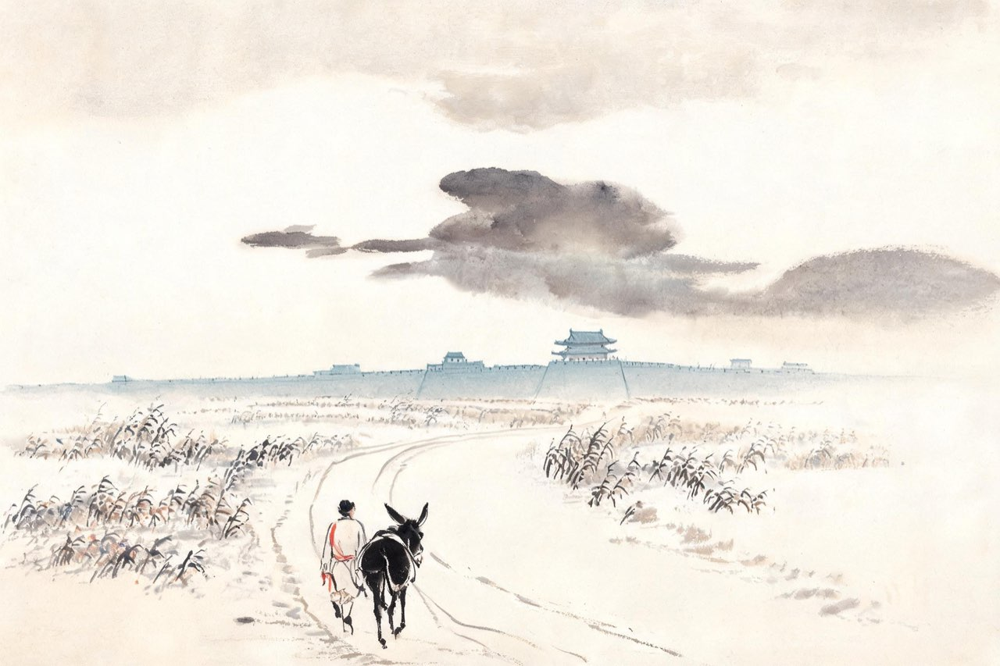

杜甫 · 758-759
华州
目击者
长安收复，你随肃宗回朝，仍任左拾遗。乾元元年春，你在门下省值夜。谏官的夜不好睡——明早有封事要上，你听着宫门的钥匙声，数着夜有多长——
春宿左省
花隐掖垣暮，啾啾栖鸟过。
星临万户动，月傍九霄多。
不寝听金钥，因风想玉珂。
明朝有封事，数问夜如何。
注
- 掖垣：门下省（左省）的宫墙——杜甫为左拾遗，属门下省，诗题「左省」即此
- 「数问夜如何」：不眠问夜，唯恐误了明早上疏——谏官之慎，笺解从通行本

出金光门
六月，清算来了。房琯一党被清洗，你贬华州司功参军——从京官贬到州县，从谏官贬成管文教祭祀的小吏。
出城那天，你走的还是金光门。一年前，你就是从这个门逃出沦陷的长安，冒死奔向凤翔；一年后，你从这个门被贬出京。你为此写了一首诗，诗题长得像一段小传：至德二载，甫自京金光门出，间道归凤翔；乾元初，从左拾遗移华州掾，与亲故别，因出此门，有悲往事。
间道奔行的忠臣，成了贬官出京的逐臣。同一座城门，隔一年，两种心情。
你到华州上任。州县的案牍里没有庙堂，你的抱负到这儿就停了——但你的眼睛，即将看到比庙堂更大的东西。
注
- 乾元元年（758）六月出为华州司功参军——信史级
- 贬官原因即房琯党清洗——本传系事，评传详考
乾元二年春，邺城溃败，朝廷紧急拉夫补前线。你从洛阳返华州，一路上，官道边的村庄正在一车一车地交出自己的男人。你听见新娘在送丈夫，老翁在送儿子——那些话，你一句一句收进耳朵，回去写成六首诗，后人叫它们三吏三别。第一首，你替一个结婚才一夜的新娘说话——
新婚别
〔节录起兴、婚别、劝勉、结拍四段，中段「父母养我时」「自嗟贫家女」诸韵从略，全文俟按仇注校录；垂老别「孰知是死别，且复伤其寒」句入本场景叙事。〕
兔丝附蓬麻，引蔓故不长。
嫁女与征夫，不如弃路旁。
……
暮婚晨告别，无乃太匆忙！
君行虽不远，守边赴河阳。
……
勿为新婚念，努力事戎行。
……
仰视百鸟飞，大小必双翔。
人事多错迕，与君永相望。
注
- 三吏三别六首一气写于归途——通行系年，信史级
- 叙事者为虚拟新娘（拟代体）——乐府传统，notes 说明
- 组诗中新安吏、潼关吏、无家别另三首不在本篇选目——notes 提及；垂老别单句入叙事（「孰知是死别，且复伤其寒」）
傍晚，你投宿石壕村。夜里，差役进村捉人——这家的三个儿子都在邺城当兵，两个已经战死，家里只剩老翁老妇和一个吃奶的孙子。老翁翻墙跑了，差役砸门的声音整夜没有停。最后出面的是老妇——
石壕吏
暮投石壕村，有吏夜捉人。
老翁逾墙走，老妇出门看。
吏呼一何怒！妇啼一何苦！
听妇前致词：三男邺城戍。
一男附书至，二男新战死。
存者且偷生，死者长已矣！
室中更无人，惟有乳下孙。
有孙母未去，出入无完裙。
老妪力虽衰，请从吏夜归。
急应河阳役，犹得备晨炊。
夜久语声绝，如闻泣幽咽。
天明登前途，独与老翁别。
注
- 「请从吏夜归」：老妇自请赴役——诗最沉痛处，笺解从通行本
- 「独与老翁别」收束：老妇已被带走，叙事只写别不写别谁——留白，笺解从通行本
- dark 依据：夜捉人的现场压迫感，全篇最黑的一夜
弃官
立秋前后，你做了一个决定：不干了。
华州司功这个官，管祭祀、学校、考课——对亲眼看过石壕村的人来说，这份案牍已无从下笔。恰逢关辅大旱，斗米千钱，俸禄撑不起一家人的口粮。你留下「满目悲生事，因人作远游」十个字，把官印交了，带着全家往西，翻陇山，去秦州投亲。
四十八岁，重新变成无业的人。你这一弃，弃掉的是体制里最后一个位置；换来的是后半生的漂泊，和一个完整的诗人。
后人算过：此后十一年，你再没有做过一任正授的官——大唐少了一个州县小吏，多了一部诗史。
注
- 弃官原因两说并存：关辅饥馑（立秋后旱）为主，兼政治失望——评传综合，notes 并录
- 「一岁四行役」：本年四段行程（春自东都回华、秋客秦、冬赴同谷、再赴剑南）——仇注，信史级
- 「正授的官」：764 年严武幕节度参谋为聘任幕职（加衔检校工部员外郎），非正授——与草堂章「杜工部」场景口径一致——校对 B7